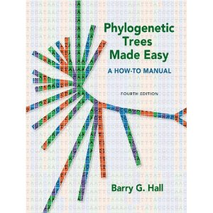

| iPhylo | |
| Phylogenetic data munging (Rutger Vos) | |
| The Tree of Life (Jonathan Eisen) | |
|  | Phylogenetic Trees Made Easy: A How-To Manual |
| Joe Felsenstein's list of phylogeny programs | |
| Page, R. D. M. (2011). Space, time, form: viewing the Tree of Life. Trends in Ecology & Evolution. http://dx.doi.org/10.1016/j.tree.2011.12.002 |
Most courses on phylogenies focus on getting data and building a phylogeny. Here we are going to focus on the problem of finding an existing phylogeny for a group of organisms, or generating one quickly if we can't find one. The perenial topic of phylogeny visualisation will also be discussed.
Often in the exploratory phase of a study we want to get a sense of the phylogenetic relationships of an organism. For example, we may be doing a pilot study on parasites of an organism, and want to discover the nearest relatives of those parasites (perhaps with a view to finding the hosts of those species - are they related to our host organism, or to something totally different?).
There is no easy way to find out what we know about the phylogeny of an organism. We may try to locate it various tools such as EOL or Tree of Life, but often the quickets thing to do is search for the taxon in GenBank and look at the publications associated with any sequences we find. Or we we can pick a sequence and find what sequences it is similar to using BLAST.
As an alternative to the NCBI BLAST web interface we can use the web services NCBI provide to provide a simple tool that takes a GenBank sequence and produces a tree.
The BLAST to tree tool takes a GenBank sequence accession number, searches NCBI for similar sequences, then displays the resulting tree. It make no claims to provide a rigourous phylogenetic analysis, simply a quick way of showing you the phylogenetic context of a sequence.
Try the tool on sequences for an organism you know about (you can find sequences via the NCBI taxonomy browser, or try the examples below).
We can also use BLAST to detect taxonomic synonyms in GenBank. As we discovered in the Taxonomy session, GenBank sometimes has sequences from the same taxon under different names. We can also uncover possible errors in GenBank sequences, or changes in name.
Use the BLAST to tree tool to build trees for the following sequences:
Given that phylogenies are fundamental to comparative biology you'd hope there was a dataabse that stored them, so that if you needed a phylogeny for, say, birds, you could retrieve the lastest tree and use it. Unfortunately we are some way from this goal. TreeBASE is a database of phylogenies, but it contains only a small fraction of published evolutionary trees.
This diagram shows the disparity been the number of papers published on molecular phylogeny each year and the number of phylogenies deposited in TreeBASE:
Another problem with TreeBASE is that its search interface is not terribly intuitive (see TreeBASE II makes me pull my hair out for some examples).
Go to TreeBASE and search for the phylogeny of a group of organisms. Did you find a tree for the taxa you are interested in?
One of the challenges posed by a database like TreeBASE is getting an overview of what it contains. If the data was geographic, for example, we could plot it on a map and see where the data came from, which parts of the world were well studied versus those that were underepresented, etc. How can we do this for phylogenies?
I've put together demo of one approach to this problem. The demo uses the NCBI taxonomy as its reference classification, then takes a tree from TreeBASE and works out what the tree is mainly "about" (e.g., is it a tree of birds, frog, or fungi). It then places the tree in the appropriate place on the NCBI classiifcation. In this way we can quickly get a sense of the taxonomic coverage of TreeBASE.
Go to http://iphylo.org/~rpage/phyloinformatics/treebase/ and browse TreeBASE. If you mouse over a vertical line you will see the name of the study appear in a popup. Click on the vertical bar and you can see the tree.
Some possible questions:
Lastly, is this a useful visualisation? What is it missing? Are there other ways of browsing a database of trees that you'd like to see implemented?
The rise of molecular methods, coupled with techniques for assigning dates to nodes based on fossils has resulted in numerous dated phylogenies being published. TimeTree is one syntheses a large number of tres to create a dated tree of life. Given two taxa you can query the database to retrieve estimates of when those taxa last shared a common ancestor.
There isn't an open API for TimeTree, but there is an iPhone app which enables you to find the divergence dates for a pair of taxa.
For a (somewhat biased) overview of phylogenetic visualisation see my talk at VIZBI (you should also check out the other VIZBI talks on Vimeo, see http://vimeo.com/vizbi).
A number 3D phylogeny viewers have been developed, such as:
I'm skeptical about the utility 3D viewers, see for example Why 3D phylogeny viewers don't work. Matt Yoder has mounted a vigorous defense, see You are in a maze of twisty little passages, all alike).
Viewing very large trees remains one of the great challenges in phylogeny visualisation. One direction that seems promising is the "tile and zoom" interface familiar to anyone using Google Maps. A naive approach is to zoom in and out of trees in the same way as a map, but this doesn't take into account the shape of the tree.
If we constrain the way the tree is zoomed we get a better effect:
Live versions of this viewer can be seen at http://iphylo.org/~rpage/deeptree/
Another promising direction is the use of touchscreen interfaces. Previously confined to research labs, the advent of the iPad and iPhone has made this technology ubiquitous.
OneZoom is a fractal-based interactive tree viewer that runs in a web browser. It has a "wow" factor, although I'm a bit sceptical about the utility of the a viewer that radically distorts the viewing space.
We badly need a comprehensive, easy to use database of evolutionary trees.
One strength of TreeBASE is that it makes its data avialble via an API. This means that people can write programs in their own favourite language. For example, if R is your thing, then this a package for TreeBASE (see the tutorial, and you can get the package from CRAN).
It is difficult to find the answers to very basic phylogenetic questions, such as "what is the phylogeny of taxon x?", or "where are the gaps in our phylogenetic knowledge?".
Relatively few phylogenies end up in public databases. Why is this, and what can we do about it?
Visualisation of phylogenies on the web is still unsatisfactory. There is also an opportunity to develop interactive displays of phylogenies within journal articles. Many trees are now too big to print on a single article page. Computer screens (in most cases) aren't any bigger, but the ability to zoom in and out of a tree, or distort the space in which it is drawn should enable us to explore the whole tree. The trick is to find a way of doing this that doesn't confuse more than it helps.